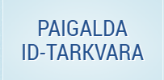

Lehed kus täna ID kaarti kasutame on:
Eesti ID-kaart on Eesti Vabariigi väljastatav isikutunnistus ehk isikut tõendav dokument.
ID-kaardi elektroonilise isikutuvastuse funktsioon võimaldab kõigil soovijail oma kliente või teenuste kasutajaid interneti vahendusel turvaliselt tuvastada. See on virtuaalses maailmas sarnane toiming, nagu näiteks tavapoes dokumendi näitamine. ID-kaardiga autentimine annab teenusepakkujale veendumuse, et inimene, kes ostab ja/või tarbib tema pakutavat teenust, on tõesti see inimene, kes ta väidab end olevat. Elektroonilist isikutuvastust on võimalik kasutada isikule suunatud veebiteenustes nii avalikus kui erasektoris, aga ka muudes valdkondades, nt mobiilseadmetes.
Võrreldes varem laialt levinud panga paroolikaartidega või näiteks olukordadega, kus inimene kasutab kümne firma veebiteenuseid, omades iga teenuse kasutamiseks erinevat kasutajanime ja parooli, on ID-kaart tunduvalt lihtsam ja turvalisem. ID-kaardi puhul kehtib kõiki teenuseid kasutades sama kaart ja sama PIN-kood. Enam ei ole vaja meeles pidada erinevaid kasutajanimesid ja paroole, samuti võib loobuda pankade koodikaartide kasutamisest. Lisaks asjaolule, et ID-kaart lihtsustab kaardi kasutaja elu, vähendab see ka teenusepakkuja riske. Kasutajanime ja parooli saamiseks palutakse kasutajal küll enda isikuandmed sisestada, kuid aja- ja rahakulud, mis oleksid vajalikud selleks, et lõplikult kontrollida, kas niisugusel moel registreerunud kasutaja on tõesti see, kes ta väidab end olevat, võivad osutuda ebamõistlikult suurteks.
ID-kaardi kasutamise nõudmisel võib teenusepakkuja olla kindel, et kaardilt tulevad andmed on õiged ning et kaart on õige isiku käes. Oma isiku Internetis tuvastamiseks peab inimene panema oma ID-kaardi kaardilugerisse ning teadma ja sisestama oma ID-kaardi PIN-koodi. ID-kaardi põhist autentimist saavad kasutada kõik firmad, kes soovivad oma teenuse kasutajaid identifitseerida. ID-kaardi kaudu isiku tuvastamise korral puudub firmadel vajadus korraldada iga kliendiga uue lepingu sõlmimiseks silmast silma kohtumine, enamikku teenuseid saab pakkuda veebist otse ja turvaliselt kõigile ID-kaardi omanikele, ilma täiendavate registreerimiste või kohtumisteta. Lisaks elektroonilisele isikutuvastusvõimalusele on ID-kaardi väga oluliseks funktsiooniks ka digitaalallkirja andmise võimalus. Alati ei pruugi ühe teenuse raames kasutusel olla kasutusel mõlemad funktsionaalsused.
ID-kaardi abil antav digiallkiri on seaduse silmis võrdne omakäelise allkirjaga. Kõik Eesti avalikud asutused on kohustatud võtma vastu digiallkirjastatud dokumente.
ID-kaardil on salajane allkirjastamisvõti, mida saab kasutada PIN-koodi abil. Selle võtmega märgistatakse allkirjastatud dokument unikaalsel ja võltsimatul viisil, mis võimaldab hiljem tõestada, et just sina selle allkirjastasid.
ID-kaartide väljastamisel väljastatakse igale kasutajale kaks sertifikaati, millest üks on isikutuvastuseks, teine digiallkirjastamiseks. Sertifikaati võib võrrelda sinu allkirjanäidisega – see on avalik ja selle abil saavad kõik kontrollida, kas sinu antud allkiri on tõepoolest ehtne. Sertifikaadis on kirjas ka sinu isikuandmed, sealhulgas nimi ja isikukood. Sertifikaadi abil saab kontrollida digitaalallkirju – kui sertifikaat ja allkiri omavahel matemaatiliselt klapivad, võib olla kindel, et allkirja on andnud see isik, kes on sertifikaadis kirjas.
Faili krüpteerimise eesmärgiks on muuta selles asuvad andmed võõrastele loetamatuteks.
ID-kaardiga krüpteerimine on eelkõige mõeldud failide turvaliseks transpordiks, mitte nende pikaajaliseks säilitamiseks. Põhjuseks asjaolu, et ID-kaardiga dekrüpteerimiseks on vajalik autentimissertifikaadis olevale avalikule võtmele vastav salajane võti, mis asub AINULT kasutaja ID-kaardil.
Juhul, kui kasutaja kaotab oma ID-kaardi, pole failide dekrüpteerimine enam võimalik. Samamoodi ei ole võimalik varasema sertifikaadiga krüpteeritud failide dekrüpteerimine pärast seda, kui kasutaja on uuendanud oma ID-kaardi sertifikaate, sest uute sertifikaatide väljastamisel genereeritakse ka uus salajane ja avalik võti.
Failide krüpteerimisel tuleb arvestada, et dekrüpteerida saavad neid ainult adressaatide hulka lisatud sertifikaatide kasutajad. Seetõttu ei tohi unustada ka ennast adressaatide hulka lisada, kui hiljem võib tekkida vajadus faili avada.
Interneti teel hääletada saab igast arvutist, millel on:
Teil on korduvalt võimalik elektrooniliselt ümber hääletada, arvesse läheb vaid viimasena antud hääl. Elektrooniliselt antud hääle võite tühistada, hääletades eelhääletamise ajal valimisjaoskonnas.
Enne kui ID kaarti saab hakata kasutama, on vaja alla laadida sellega kaasnev tarkvara. Selle jaoks on vaja minna ID.ee lehele ja vajutada nupule "Paigalda ID-Tarkvara.
Lehel mis avaneb on lühike kirjeldus kuidas selle paigaldamine töötab. Vajutage sellel lehel nupule Laadi alla
See järel laeb arvuti alla vajaliku tarkvara, mis tuleb veel installeerida.
Eesti.ee on riigi poolt haldatud veebileht, mille alt on võimalik läbi viia igasuguseid riigi poolt vajatud tegevusi. Näiteks on seal teie @eesti.ee emaili aadress, sealt on võimalik taotleda igasuguseid hüvitisi, saab vaadata pensioni valikuid, saab lugeda erinevate lubade kohta, vaadata igasuguseid andmeid jne
Portaali kaudu saab kasutada riiklike registrite teenuseid, mis võimaldavad teha päringuid ja kontrollida endaga seotud infot. Vaadata näiteks Äriregistrist oma seotust erinevate ettevõtetega. Kontrollida Liiklusregistrist oma juhtimisõiguse kehtimist või isiklike sõidukite loetelu. Vaadata üle oma isiklike andmete paikapidavust Rahvatikuregistris jms. Lisaks neile on portaalis ka teenuseid, mis pole otseselt X-teega seaotud.
Eesti.ee on uks, mille kaudu pääsed otse e-riiki: e-maksuametisse, e-kinnistusraamatusse, patsiendiportaali digilugu.ee ja teistesse vajalikesse keskkondadesse.
Ametlik e-posti aadress isikukood@eesti.ee on olemas igal isikukoodi omaval Eesti elanikul, lisaks saavad ID-kaardi omanikud koos kaardiga ka aadressi eesnimi.perekonnanimi@eesti.ee. Kui samanimelisi inimesi on mitu, siis tekivad nimele juurde järjekorranumbrid - näiteks eesnimi.perekonnanimi1@eesti.ee.
Iga äriregistris registreeritud juriidiline isik omab ametlikku e-posti aadressi kujul registrikood@eesti.ee ja ettevõtte.nimi@eesti.ee.
@eesti.ee aadressile tulnud kirjad suunatakse ümber mõnele tegelikule meiliaadressile, nagu näiteks hot.ee, mail.ee või hoopis tööga seotud meiliaadressile. Kodanikule on see mugav kanal nii e-valijakaardi tellimiseks kui ka igapäevaseks asjaajamiseks riigiasutuste ja tuttavatega, kuna see aadress ei muutu mitte kunagi - isikliku meiliaadressi vahetamise korral saab @eesti.ee aadressi järgmisele aadressile suunata.
Ametiasutustega suhtlemise lihtsustamiseks on riigiportaalis käepärased e-vormid (eeltäidetud elektroonilised dokumendid). Inimene peab lisama vaid oma andmed ja edastama taotluse näiteks lapse esimesse klassi registreerimiseks, ühekordse sotsiaaltoetuse saamiseks vms. ametlikuks toiminguks.
Portaali populaarsemad teenused on elukohateate ja vanemahüvitise taotluse edastamine, oma andmete kontroll riiklikest registritest, mitmed politsei e-teenused ning Euroopa ravikindlustuskaardi taotlemine.
Riigi e-teenused ja info paiknesid kunagi hajusalt internetiavaruse erinevates keskkondades, nagu www.riik.ee, X-tee päringute portaal ja KIT teabeportaal. 2007. aasta lõpus koondati need ühtsesse riigiportaali, mida haldab Riigi Infosüsteemi Amet.
Eesti maksu ja tolli ametil on oma veebikeskkond lehel EMTA.ee, kus on võimalik teha paljusid nende poolt pakutud teenuseid interneti teel, selle asemel et füüsiliselt nende kontorisse minna. See keskkond on juurdepääsetav ainult ID kaardiga.
EMTA.ee on oluline veebileht millel tuleks igal ühel vaja oma võimalustega tutvuda!
Patsiendiportaalis näed Sa oma terviseandmeid, saad esitada tahteavaldusi, määrata endale esindaja(d) ning teha toiminguid isikute eest, kes on määranud Sind enda esindajaks.
Tervise infosüsteemis paiknevad terviseandmed, mis on tervishoiuteenuste osutajad esitanud Sinu kohta. Siia kogutakse kõige olulisem meditsiiniline informatsioon.
Digiloo andmekogu koondab inimese tähtsamaid isikuandmeid, haiguslugusid (sealhulgas ka sünnituslugu ja lahangulugu), visiite ja muud tervist puudutavat informatsiooni, nagu tervisekaart, kiirabikaart, hambaravikaart jne.
Digilugu võimaldab arstidel edastada teineteisele ravi käigus tekkivaid dokumente ning pakub arstile aegkriitiliste ja isiku üldandmete päringu võimalust. Infosüsteem talletab patsiendi meditsiinilise ajaloo ja võimaldab konkreetse patsiendi raviarstidel sellega vajadusel tutvuda.
Patsiendiportaalis saab patsient tutvuda andmetega oma visiitidest, uuringutest, diagnoosidest jms, mis on kantud Tervise infosüsteemi alates terviseasutuse liitumisest süsteemiga. Samuti näeb patsient portaalis andmeid oma ravikindlustuse kohta ning saab volitada endale usaldusisikuid digiretsepti väljaostmiseks ja muudeks toiminguteks. Patsiendiportaalis saab ühtlasi anda nõusolekuid doonorluseks ja vereülekande teostamiseks ning tulevikus on patsiendiportaali kaudu võimalik ennast ka visiidile registreerida.
Tervise infosüsteem tõhustab ka arstide tööd. Raviarstile annab see kiire ülevaate patsiendi diagnoosidest ja ravimitest ning vajadusel on arstil võimalus võrrelda varem läbiviidud uuringuid viimaste tulemustega. Perearstile luuakse võimalus saada kiiresti tagasiside oma nimistu patsientide uuringute tulemustest või nende sattumisest kas kiirabisse või haiglasse. Isikustamata (anonüümsel) kujul saab tervise infosüsteemis olevaid andmeid kasutada statistikaks, arstiabi tõhustamiseks ja ravikvaliteedi hindamiseks ning teadusuuringuteks.
Kuna Tervise infosüsteemis olevad andmed on väga delikaatsed, on digiloo ülesehitamisel pööratud väga suurt rõhku süsteemi turvalisusele ja kaitsele nii võimalike rünnete eest kui ka andmete lekke eest. Madis Tiik ütleb, et seetõttu on ka Patsiendiportaali võimalik siseneda ainult ID-kaardi abil.
Digiregistratuur on Põhja Eesti Regionaalhaigla poolt pakutud digitaalne registreerimis viis, mille kaudu on võimalik leppida eriala arstide kokku visiidi aeg läbi interneti.
Nagu ka eelmistel lehtedel mille täna tutvusime, on ka Digiregistratuur juurdepääsetav ainult ID kaardi või mobiil-IDga.
Digiregistratuuri sisse logides saata otsida endale sobivat arsti aega kas läbi eriala või spetsiifilise arsti.
Kui valik on tehtud siis saate kalendri järgi valida aegu kas üldjärjekorras või tasulise visiidina.
Kui aeg on välja valitud siis jääb üle ainult aeg registreerida.
Hetkel valitseb olukord, kus erinevate meditsiiniasutuste digitaalse registreerimise süsteemid pole üksteisega ühilduvad. Seoses sellega puudub ka üks keskne vahend, mille abil patsient saaks näha korraga kõigi Eestis praktiseerivate meditsiinitöötajate vastuvõtuaegu ja järjekordi.
digireg.keskhaigla.ee on Lääne Tallinna Keskhaigla versioon digiregistratuurist. Disaini poolest on see üsnagi sarnane, ning otsing töötab samuti eriala ja arsti järgi. Selle puhul on aga võimalik ka otse filtreerida tasuta ja tasuliste vastuvõttude vahel.